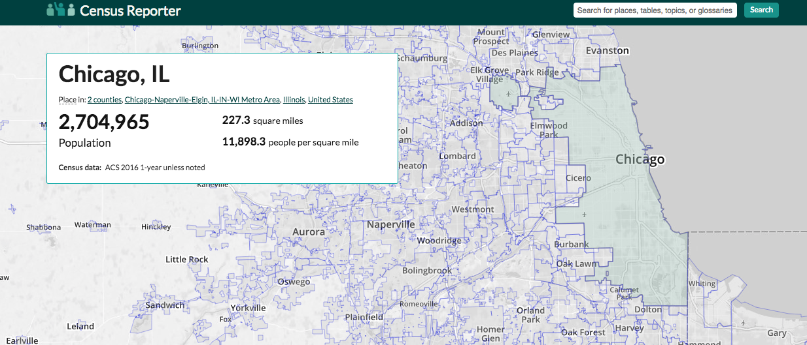
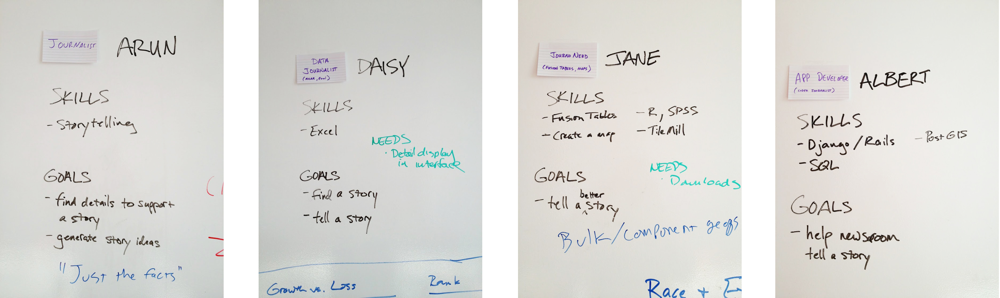
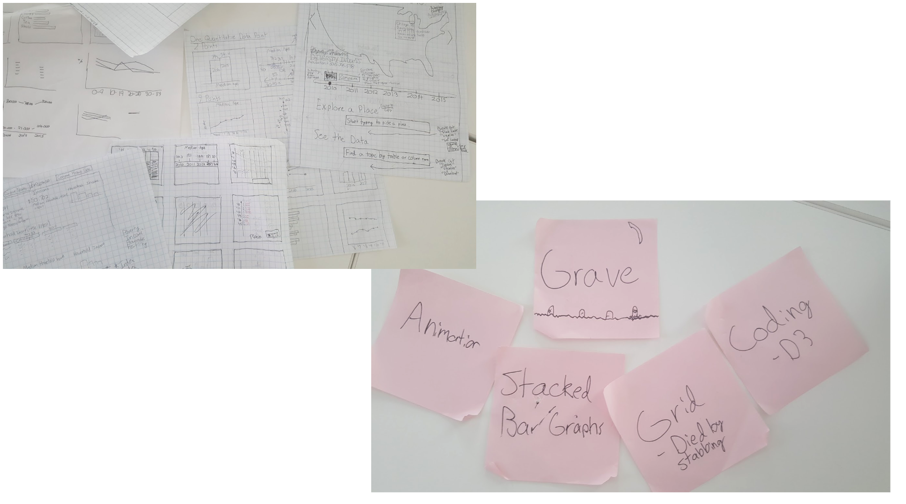
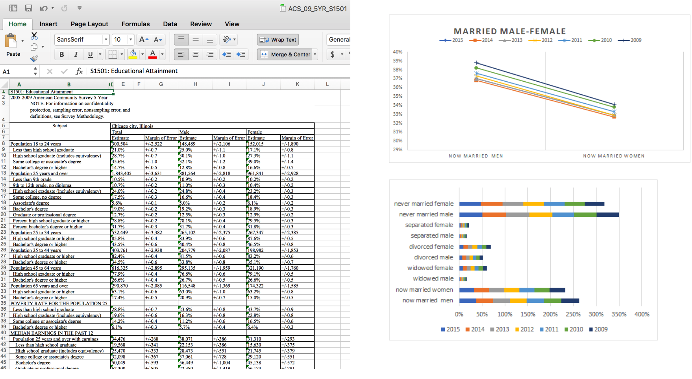
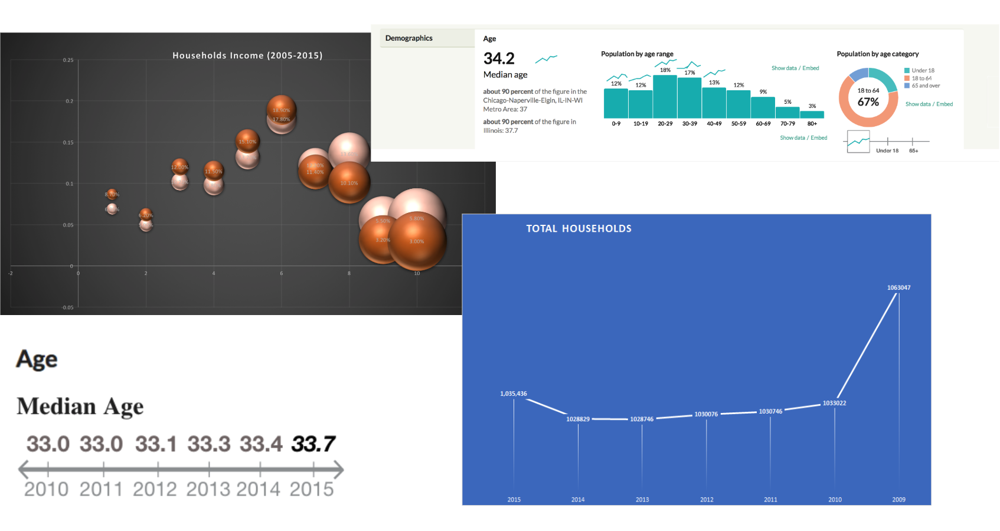
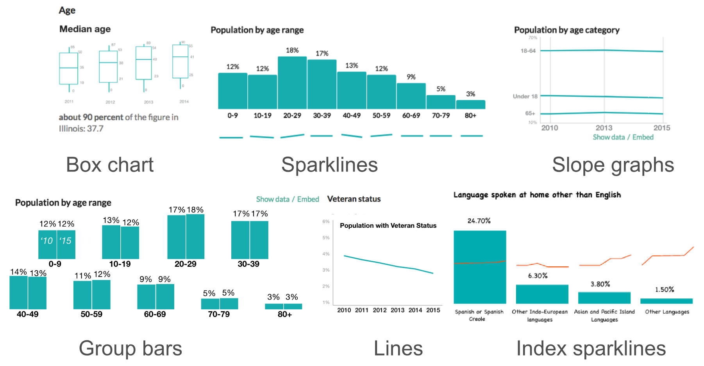
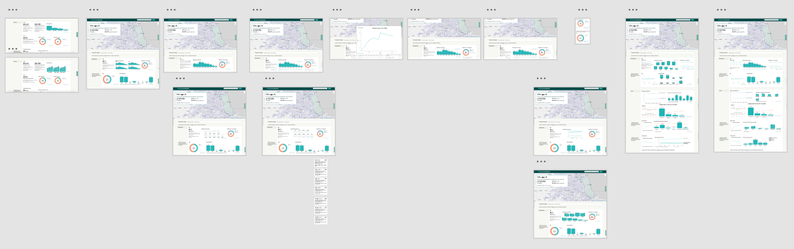

Overview
Census Reporter is a non-profit website for journalists to better understand and apply census data.
Our goal was to find approaches to integrate historical data from American Census Survey (ACS) into the website without discrupting the current graphs and make it user-friendly for non tech-savvy journalists.
Time: March - June, 2017
Team members: Bryan Li, Hailey Melville, Jamal Julien
My role: UX Researcher, UX/UI Designer
Instructor: Joe Germuska, Zach Wise
Highlights: Data visualization prototype to integrate historical data into the current Census Reporter
Tools: Affinity Map, Excel, Adobe Photoshop, Adobe XD, D3
Problem Statement
Right now Census Reporter only include the one-year data from ACS in 2016. Take the Chicago page as an example, it has five categories in total, which are Demographics, Economics, Families, Housing and Social. Considering the goal and mission of Census Reporter, I wrote our fist problem statement as below.
Reporters need add-on functions on Census Reporter to understand the historial census data. They will expect some built-on graphs as well as access to raw data so that they can apply them in their stories.
Research
We talked to our stakeholders to learn more about the targer users as well as the outcome they expected. Then we created four personas as below to give us a clear picture of who we are building this project for.
Although some of the users are skilled data journalists or even developers, we realized we should start designing for the most non tech-savvy users.
Ideation
We've spent weeks sketching and brainstorming the solutions. The biggest challenge is to come up with a template that will be suitable for one category of data in all cities. Templates of different categories should also be consistent to avoid complexity.
We downloaded the historical data from American Census Bureau, then synthesized and analyzed them in excel. We've identified different graph types to get them fit into the data, including lines, stacked bars, sparklines, bubbles, and even the simple texts.
Final Prototype
Based on our sketches and low-fi prototypes, we adjusted the styles and colors and finally created six prototypes shown below to display the historical data.
The last step was to integrate it into the existing Census Reporter website. We used Adobe XD for prototyping and wireframing.
Learnings & Challenges
The most challenging part for us in this project was the ideation. As we almost spent half of the quarter sketching and researching, we had tons of trials and tribulations, mosts of which ended up going to our "grave". We realized two tasks as well as challenges to achieve along our process.
The sparkline is a good attribute that we came up with to informatively show trends without distorting the existing website. For the final prototype, we modified the existing website by adding adds-on functions like sparklines, or displacing some of the graphs but keeping the interface consistent.
I took efforts to try complicated data visualization tools and graphic types, but after some heuristic usability testings, we found the simple, the more user-friendly. Considering the mission of Census Reporter and our targer users based on our research, we discarded those prototypes that require much programming backgrounds.
Another consideration is the application for mass production, and this is something I felt most diffrent from my previous data visualization experience. Unlike visualizations for news stories that usually disaply a small amount of data with eye-catching styles for readers, this project requires an applicable method for a large amount of data.
Due to the time limitation, we only created a sample page with the data of Chicago. The next step would be more focuses on a shortcut to access the data efficiently and synthesized them to our prototypes.